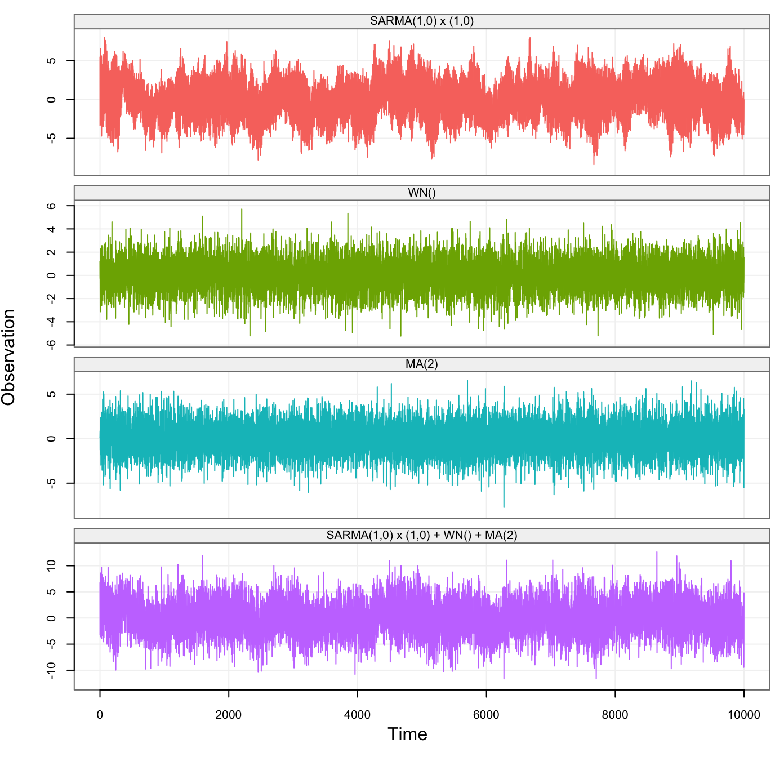

Simulations through Models
Justin Lee
Time Series Models
In this section we briefly list, describe and provide the syntax for the models available for simulation purposes within the simts package. Under some minor constraints, all these models can then be combined into a specific class of linear state-space models which can be represented as a sum of underlying models. Having stated this, some of the basic models available in the simts package to simulate from (and to estimate) are the following:
- White Noise (WN())
- Quantization Noise (QN());
- Random Walk (RW())
- Drift (DR())
- AR(1): First-order autoregressive process (AR1())
- ARIMA: Integrated Autoregressive Moving Average process (ARIMA())
- SARIMA: Seasonal ARIMA process (SARIMA())
The expressions in brackets in the above list represent the syntax used in the simts package to specify the model. The only model which may be less known is the quantization noise which is a process that is often used in engineering fields and can be described in layperson terms as being a good approximation of a rounding error. The brackets for the syntax of each model are left to specify parameter values for simulation purposes or to specify starting values for estimation purposes. The code below shows how these model specifications can be used for simulations based on the built-in function gen.gts() which allows to generate samples from all these models.
# Set seed for reproducibility
set.seed(1337)
# Number of observations
n = 1e4
# Generate a White Noise Process
wn = gen_gts(n, WN(sigma2 = 1))
# Generate a Quantization Noise
qn = gen_gts(n, QN(q2 = .5))
# Generate a Random Walk
rw = gen_gts(n, RW(gamma2 = .75))
# Generate a Drift
dr = gen_gts(n, DR(omega = 0.10))
# Generate an AR(1)
ar1 = gen_gts(n, AR1(phi = .9, sigma2 = .1))
# Generate an MA(1)
ma1 = gen_gts(n, MA1(theta = .3, sigma2 = .5))
# Generate an ARMA(1,1)
arma11 = gen_gts(n, ARMA11(phi = .9, theta = .2, sigma2 = 1))
# Generate an SARIMA(1,0,1)x(2,1,1)[12] process
sarima = gen_gts(n, SARIMA(ar = 0.3, i = 0, ma = -0.27,
sar = c(-0.12, -0.2), si = 1, sma = -0.9,
sigma2 = 1.5, s = 12))The simts package therefore allows to easily simulate from a wide variety of models, includ- ing SARIMA models, but does not limit itself to these basic models. Indeed, under some restrictions, these models can be combined in different ways to de- liver many state-space (latent) models which can be represented by the sum of basic models. The construction of such linear state-space models is very simple with the simts package allowing it to be considerably user-friendly. In fact, to specify that a model is a combination of different models, all that is needed is to use the “+” symbol between them and, supposing that different AR1() processes are present in the state-space model, the syntax to insert “k” of these models in a state-space model is k*AR1(). So, for example, the sum of three AR(1) models, a random walk and a white noise process can be specified as: 3*AR1()+RW()+WN(). As we see below, the function specifically provided to generate and represent these models is the gen.lts() which, while simulating from these models, also gives the option to plot a breakdown of the underly- ing processes by applying the plot() function on the result of gen.lts().
sarma_wn_model =
SARMA(ar = 0, ma = 0, sar = 0.9, sma = 0, s = 10, sigma2 = 1) +
WN(sigma2 = 2)
Xt = gen_lts(n = n, model = sarma_wn_model)
plot(Xt)
sarma_wn_ma_model =
SARMA(ar = 0.25, ma = 0, sar = 0.9, sma = 0, s = 10, sigma2 = 1) +
WN(sigma2 = 2) +
MA(theta = c(0.1,-0.8), sigma2 = 2)
Yt = gen_lts(n = n, model = sarma_wn_ma_model)
plot(Yt)